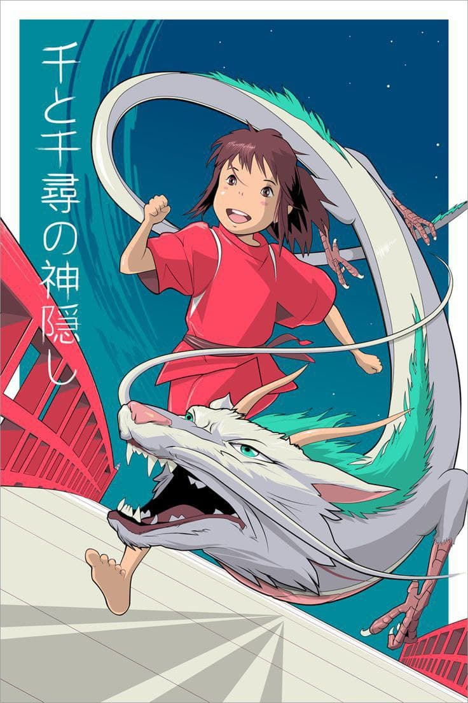
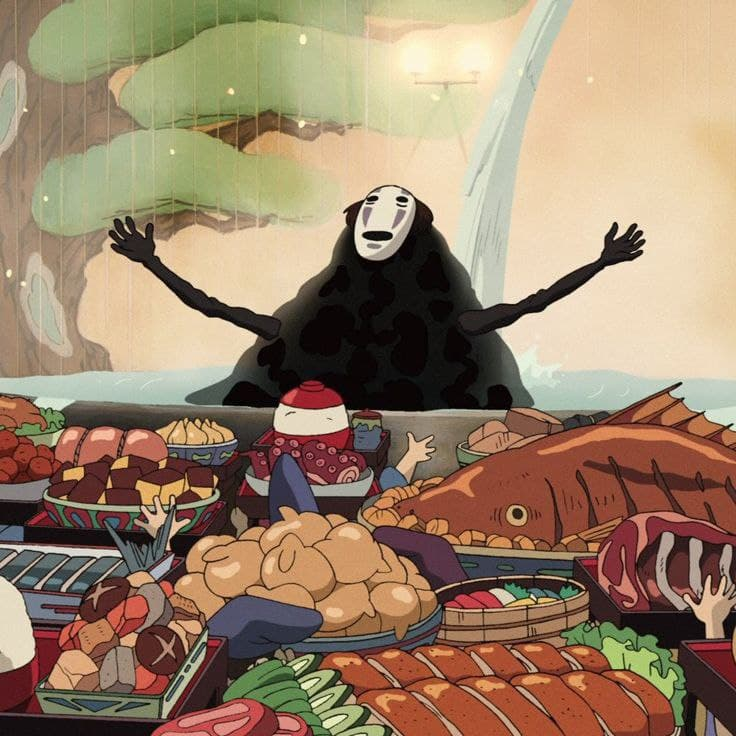

Унесенные призраками (2001)
«Унесённые призраками» (яп. 千と千尋の神隠し Сэн то Тихиро но камикакуси, «Сэн и похищенная ками Тихиро») — полнометражный аниме-фильм режиссёра Хаяо Миядзаки, снятый на студии «Гибли» в 2001 году. Премьера фильма в Японии состоялась 20 июля 2001 года.
Сюжет фильма повествует о 10-летней девочке по имени Тихиро Огино, которая переезжает в новый дом. Но выходит так, что она попадает в другой мир, населённый призраками и монстрами. После того как её родителей превращает в свиней ведьма Юбаба, Тихиро идёт на работу в баню Юбабы, чтобы найти способ освободить себя и своих родителей, а также вернуться в человеческий мир. В озвучивании персонажей принимали участие известные японские сэйю: Хиираги Руми, Ирино Мию, Нацуки Мари и Бунта Сугавара.
Фильм имел огромный успех у критиков и зрителей, а также фигурирует во многих списках величайших анимационных фильмов в истории. Он стал самым успешным фильмом в истории Японии, с кассовыми сборами около 274 млн долларов США. Фильм обогнал «Титаник» (в то время самый кассовый фильм в мире) в японском прокате, и стал самым кассовым фильмом в истории Японии с общими сборами в 30,4 млрд иен. Он выиграл премию «Оскар» в номинации «лучший анимационный полнометражный фильм» в 2003 году, а также приз «Золотой медведь» на Берлинском кинофестивале в 2002 году. Также «Унесённые призраками» занимают 1-е место в рейтинге лучших мультфильмов всех времён и народов по версии IMDb.
СМОТРЕТЬ ТРЕЙЛЕР СМОТРЕТЬ МУЛЬТФИЛЬМ